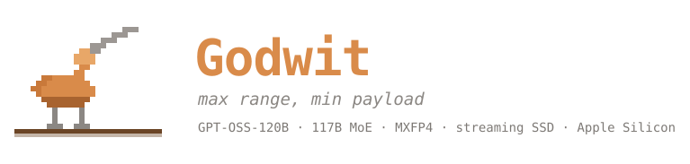
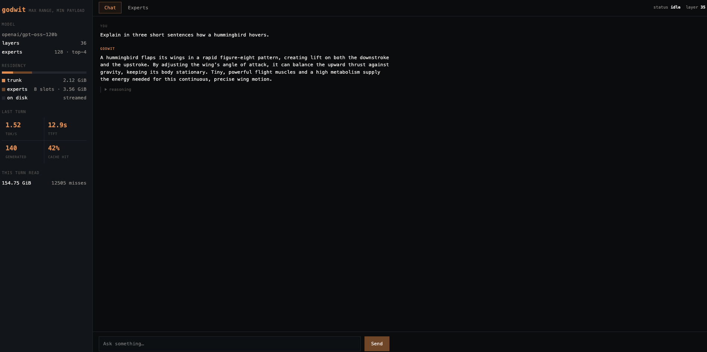
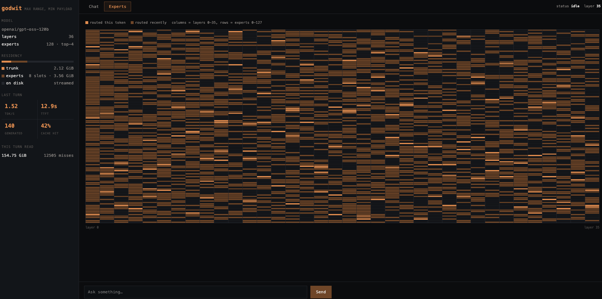

Embeddings, attention, routers and norms, quantised to int8.

GPT-OSS-120B is 59 GiB on disk. Godwit runs it on an Apple Silicon Mac with 16 GB of memory by keeping only the shared trunk resident and streaming mixture-of-experts weights from SSD as the router asks for them. Swift and Metal, no dependencies.
GPT-OSS-120B has 128 experts in each of its 36 layers. For any given token the router picks four of them. The other 124 contribute nothing to that token and need not be in memory.
Every mainstream runtime still requires the whole checkpoint resident, so disk footprint sets the memory requirement and a 59 GiB model needs a 64 GiB machine. Godwit keeps the trunk — embeddings, attention, routers, norms — in 2.12 GiB, and fetches experts as they are chosen.
Embeddings, attention, routers and norms, quantised to int8.
Eight slots per layer, evicted least-frequently-used.
4,608 experts at 12.6 MiB each, read on demand.
The cost is throughput. You are trading tokens per second for the ability to run the model at all, and on a base MacBook Air that buys about 1.4 tokens per second. The bet is that slow beats impossible.
godwit serve opens a dashboard on loopback. No npm, no build step —
the binary serves the whole interface.


A range map is the ornithologist's chart of where a species is found. This is the same idea over topic space. Godwit probes the router with twelve kinds of text and records which experts fire for each; position comes from the principal components of those affinity vectors. Nothing here is trained — it is measurement.
loading…
Read this before believing the counts.
73% of the experts labelled python fired fewer than twenty times
across the probes. An expert that fires twice, both times on Python, scores as a
pure specialist when it is merely under-sampled. Roughly 150 of the 545 have
enough activations to be defensible. More probe samples would fix it and has not
been done.
| Metric | Value |
|---|---|
| Decode | 1.4–1.5 tok/s |
| Prefill | ~2.2 tok/s |
| Time to first token | 10–13 s |
| Resident memory | 5.7 GiB |
| GPU busy | 17.6% of wall time |
| Expert reads | 71.6% of decode |
That is device speed, not an inefficiency. The read path already runs at what this SSD delivers. Small Apple SSDs use fewer NAND dies and are genuinely slower — this one reads ~2 GiB/s, where 512 GB–2 TB modules reach 3–6. The same code should reach roughly 3–5 tok/s on a Mac with a larger SSD. That has not been verified, because no such machine was available.
Recorded because they cost as much to establish as the wins.
| Attempt | Result |
|---|---|
| Cross-layer prefetch | 4.8% hit vs 3.1% chance |
| Concurrent miss reads | no effect |
| Splitting reads into chunks | slightly worse |
| More cache slots (24) | swaps; 0.12 tok/s |
| Threadgroup-memory staging | no effect |
| File defragmentation | no effect |
It is slow. 1.4 tokens per second is roughly 100 words a minute — slower than you read. Good for long-form generation you can walk away from; poor for conversation.
GPT-OSS-20B fits in the same 16 GB and runs at 30–50 tok/s under MLX. For most tasks it is good enough, and if that is true for yours you should use it instead. Godwit matters where the larger model's quality is worth the wait, or where even 20B will not fit.
One model family so far. About 78% of the Swift is model-agnostic and reads its dimensions from a spec; the rest is tensor naming, YaRN-only RoPE, and the assumption of MXFP4 experts. Adding a second family should mean writing a loader rather than a runtime — untested until someone does it.
# Apple Silicon, macOS 26+, Swift 6.2+, ~60 GB free
git clone https://github.com/rayl15/Godwit.git
cd Godwit
swift build -c release
# Stream and repack the checkpoint. ~59 GiB, about 3 hours.
.build/release/godwit install --output model.gwt
.build/release/godwit chat --model model.gwt # terminal
.build/release/godwit serve --model model.gwt # dashboard